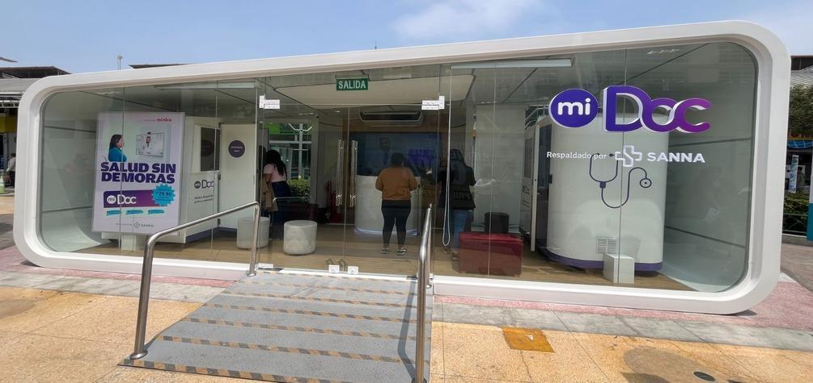
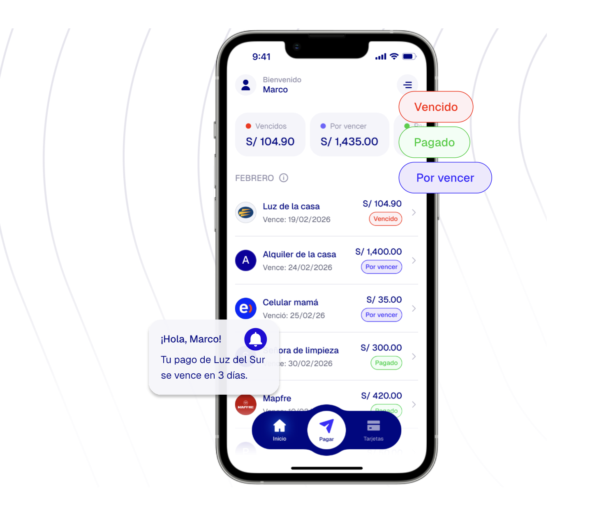
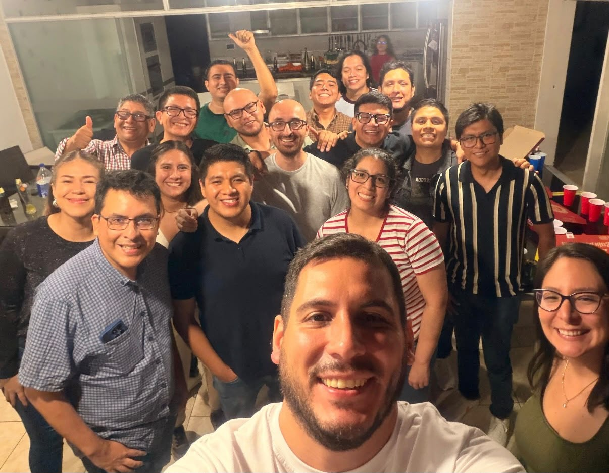

Bachelor’s Degree in Informatics Engineering
Universidad Ricardo Palma · Peru
Ranked 1st in my graduating class. Coursework: Probability and Statistics, Data Structures and Algorithms, Calculus, and Discrete Mathematics.
INFORMATICS ENGINEER PERU
Informatics engineer with over 10 years of experience in software engineering, including work in healthcare technology and multi-agent AI.
Building MiDoc brought me closer to the challenges of delivering accessible healthcare in Peru. I now want to deepen my expertise in medical image analysis and trustworthy AI, with the long-term goal of developing clinically validated tools for earlier tuberculosis detection in Peru.
EDUCATION
Universidad Ricardo Palma · Peru
Ranked 1st in my graduating class. Coursework: Probability and Statistics, Data Structures and Algorithms, Calculus, and Discrete Mathematics.
CERTIFICATIONS
CertiProf
VMEdu.com
The projects that have most shaped how I work as an engineer.

MiDoc - Telemedicine BoothsLed the development of a telemedicine platform serving over 10,000 patients. Integrated digital otoscopes, dermatoscopes, and stethoscopes for remote examinations and coordinated the secure exchange of electronic health records with SANNA using HL7 FHIR.
Technical lead · May 2024 – Apr 2025. midoc.pe

PAGAO APPArchitected a multi-agent AI platform for managing and paying bills through WhatsApp, serving over 1,000 users. Combined RAG and function calling with security guardrails, observability, and continuous evaluation using Ragas and DeepEval.
Technical lead · May 2025 – present. pagao.com.pe
Banco de Crédito del Perú (BCP) · Lima, Peru
Led a five-member team across Peru, Chile, and Colombia to build MiDoc. Subsequently led the development of Pagao, collaborating with design, business, and data teams on an AI payment platform that processed over PEN 1 million in transactions.
Skillnest · Latin America
Taught full-stack development to over 100 students across four cohorts from six Latin American countries, guiding learners from programming fundamentals to practical final projects.

The people, communities, and experiences that shaped my academic and professional journey.